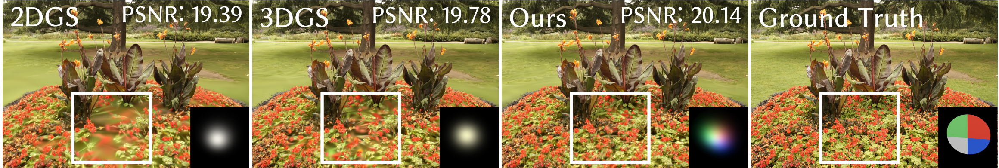
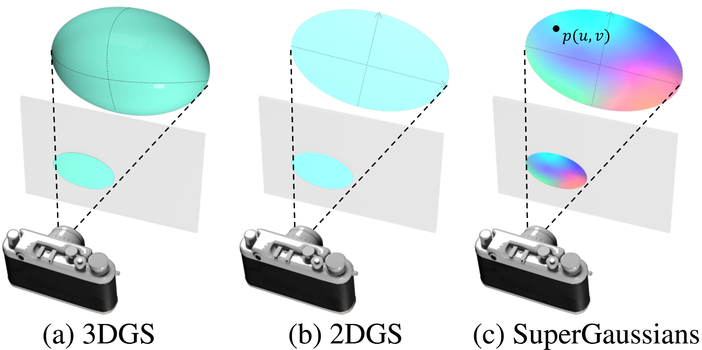
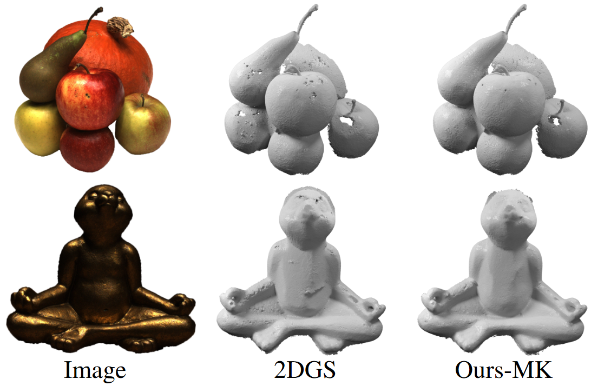

SVGS: Enhancing Gaussian Splatting Using Primitives with Spatially Varying Colors
4Hong Kong University of Science and Technology 5Macau University of Science and Technology 6Shandong University 7Texas A&M University


Abstract
Gaussian Splattings demonstrate impressive results in multi-view reconstruction based on Gaussian explicit representations. However, the current Gaussian primitives only have a single view-dependent color and an opacity to represent the appearance and geometry of the scene, resulting in a non-compact representation. In this paper, we introduce a new method called SVGS that utilizes spatially varying colors and opacity in a single Gaussian primitive to improve its representation ability. We have implemented bilinear interpolation, movable kernels, and even tiny neural networks as spatially varying functions. Quantitative and qualitative experimental results demonstrate that all three functions outperform the baseline, with the best movable kernels achieving superior novel view synthesis performance on multiple datasets, highlighting the strong potential of spatially varying functions.
SVGS

SVGS gives each Gaussian the ability to vary spatially. Compared with 2DGS and 3DGS, SVGS is more expressive and can better reconstruct details (as seen in the white area). Additionally, SVGS can express more color variations using only one Gaussian, instead of being limited to just one color (bottom right).
Methods

Results

Visual comparison with 2DGS and 3DGS on both the Mip-NeRF360 dataset and the Tanks&Temples dataset shows that SVGS can reconstruct details better due to stronger expressiveness.

2DGS has demonstrated impressive capabilities in geometric reconstruction. Since SVGS is implemented based on 2DGS, it inherits these excellent geometric reconstruction capabili- ties, although this is not our primary objective. The results demonstrate that our geometric reconstruction capa- bilities are comparable to 2DGS when there is no limit on the number of Gaussians, while also ensuring the high- est PSNR, indicating the best image reconstruction quality. Furthermore, when a limited number of Gaussians is used, our powerful expressiveness becomes apparent, greatly out- performing 2DGS in both geometric reconstruction quality and image rendering quality.